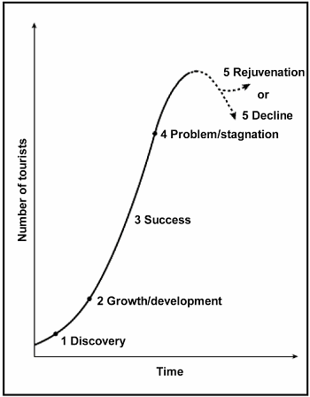

Das Butler-Modell
Der Destinationslebenszyklus touristischer Entwicklung
Einführung in das Butler-Modell
Das Butler-Modell (1980) beschreibt die typische Entwicklung einer Tourismusdestination in sechs charakteristischen Phasen. Es zeigt, wie sich Tourismusgebiete von der ersten Entdeckung bis zur möglichen Erneuerung oder zum Niedergang entwickeln.
Richard Butler (1980)
Der kanadische Geograph Richard Butler entwickelte dieses Modell basierend auf dem Produktlebenszyklus aus der Wirtschaftswissenschaft. Es ist eines der wichtigsten Modelle in der Tourismusgeographie.

Das Butler-Modell: Entwicklungsphasen einer Tourismusdestination
Die 6 Phasen des Butler-Modells
Phase 1: Erkundung (Exploration)
Merkmale:
- Wenige Pionier-Touristen und Abenteurer
- Keine spezielle touristische Infrastruktur
- Authentische, unverfälschte Erlebnisse
- Minimale Umweltauswirkungen
- Touristen nutzen lokale Einrichtungen
Beispiel: Entdeckung abgelegener Bergdörfer durch Wanderer
Phase 2: Erschließung (Involvement)
Merkmale:
- Erste touristische Einrichtungen entstehen
- Lokale Bevölkerung wird aktiv (Pensionen, Restaurants)
- Steigende Besucherzahlen
- Erste Werbemaßnahmen
- Entstehung einer "Tourismuszone"
Beispiel: Erste Hotels und Gasthäuser in Skigebieten
Phase 3: Entwicklung (Development)
Merkmale:
- Rasches Wachstum der Besucherzahlen
- Massiver Ausbau der Infrastruktur
- Externe Investoren und Hotelketten kommen
- Tourismus wird wichtiger Wirtschaftsfaktor
- Erste Umwelt- und soziale Probleme
Beispiel: Bau von Liftanlagen und großen Hotels in den Alpen
Phase 4: Konsolidierung (Consolidation)
Merkmale:
- Verlangsamung des Wachstums
- Tourismus dominiert die lokale Wirtschaft
- Erste Umweltprobleme werden sichtbar
- Marketing wird intensiviert
- Konkurrenz durch andere Destinationen
Beispiel: Etablierte Badeorte am Mittelmeer in den 1990ern
Phase 5: Stagnation (Stagnation)
Merkmale:
- Besucherzahlen stagnieren oder gehen zurück
- Umwelt- und soziale Probleme verstärken sich
- Destination verliert an Attraktivität
- Konkurrenz durch neue, günstigere Ziele
- Überalterung der Infrastruktur
Beispiel: Viele Alpenregionen heute, überlastete Mittelmeerorte
Phase 6: Erneuerung oder Niedergang
Zwei mögliche Entwicklungen:
A) Erneuerung (Rejuvenation):
- Neue Attraktionen und Angebote
- Nachhaltiger Tourismus
- Modernisierung der Infrastruktur
- Neue Zielgruppen erschließen
B) Niedergang (Decline):
- Rückgang der Besucherzahlen
- Wirtschaftliche Probleme
- Verfall der Infrastruktur
- Abwanderung der Bevölkerung
Beispiele:
Erneuerung: Barcelona (Olympia 1992), Bilbao (Guggenheim Museum)
Niedergang: Verlassene Badeorte an der Ostsee
Interaktive Aufgabe: Phasen zuordnen
Ordnet die folgenden Beschreibungen den richtigen Phasen des Butler-Modells zu:
Szenario 1: Ein kleines Fischerdorf wird von wenigen Rucksacktouristen entdeckt, die in einfachen Pensionen übernachten.
Szenario 2: Ein Skigebiet baut massiv neue Liftanlagen und Hotels, internationale Ketten investieren stark.
Szenario 3: Ein Badeort kämpft mit rückläufigen Gästezahlen und starker Konkurrenz durch günstigere Destinationen.
Kritik und Grenzen des Butler-Modells
Stärken des Modells:
- Einfach verständlich und gut visualisierbar
- Hilft bei der strategischen Planung von Destinationen
- Zeigt typische Entwicklungsmuster auf
- Warnt vor möglichen Problemen in späteren Phasen
Schwächen und Kritikpunkte:
- Nicht alle Destinationen folgen diesem Muster
- Zeitrahmen ist sehr unterschiedlich
- Externe Faktoren (Krisen, Naturkatastrophen) werden nicht berücksichtigt
- Modell ist zu deterministisch (vorhersagbar)
- Kulturelle Unterschiede werden nicht beachtet
Moderne Entwicklungen
Heute entwickeln sich Tourismusdestinationen oft anders als im Butler-Modell vorhergesagt:
- Digitalisierung beschleunigt Entwicklungen
- Nachhaltigkeit wird von Anfang an mitgedacht
- Nischentourismus ermöglicht andere Entwicklungspfade
- Globalisierung verändert Tourismusströme schnell
Anwendungsaufgabe
Aufgabe: Analysiert eine bekannte Tourismusdestination eurer Wahl mit dem Butler-Modell.
Arbeitsschritte:
- Wählt eine Destination (z.B. Mallorca, Garmisch-Partenkirchen, Venedig)
- Recherchiert die historische Entwicklung des Tourismus dort
- Ordnet die Destination einer aktuellen Phase zu
- Begründet eure Einschätzung mit konkreten Beispielen
- Entwickelt Lösungsvorschläge für erkannte Probleme
Leitfragen:
- Wann begann der Tourismus in dieser Region?
- Wie haben sich die Besucherzahlen entwickelt?
- Welche Infrastruktur wurde gebaut?
- Gibt es Umwelt- oder soziale Probleme?
- Wie könnte sich die Region erneuern?